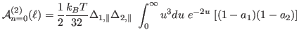

We investigate the amount that each term contributes to the Matsubara sum, in
the Hamaker coefficents,
and
.
(11)
and
(12)
with the n = 0 term given by
(13)
and

(14)
where .
The following plot shows the value of each term of for different values of separations. As separations increase,
more of the higher frenquency terms of
show a weakened contribution to the sum.
Figure 7:Terms contributing to Matsubara sum as a function of n.
The terms of
show a sharp valley at the value of n for which the
dispersion spectra,
and
, have
their closest approach to each other.
Figure 8:The derivative of
with respect to separation for a
range of values of n from n=0 to n=46. Derivative of Matsubara terms with
respect to ,
, for two perpendicular [6,5] CNTs in water.
Colors represent groups of six increasing adjacent vales of n, i.e. for n=(0 to 6) blue,
n = (10 to 16) green, n = (20 to 26) red, and so on to n = (40 to 46) black.
Figure 9:The derivative of
with respect to n for different
values of separation. Derivative of Matsubara terms with respect to n,
, for two perpendicular [6,5] CNTs in water. Colors represent
groups of 3 values of , i.e. blue for = 1,6,11 nm, green for n =
50,56,61; red for = 100,106,111, and so on.


![$\displaystyle {\cal A}_{n=0}^{(0)}(\ell) = \frac{1}{2} \frac{k_BT}{32} \Delta_{...
...a_{2,\parallel} \int_0^{\infty} u^3 du e^{-2u} [2(1 + 3a_1)(1 + 3a_2) ]$](img41.png)